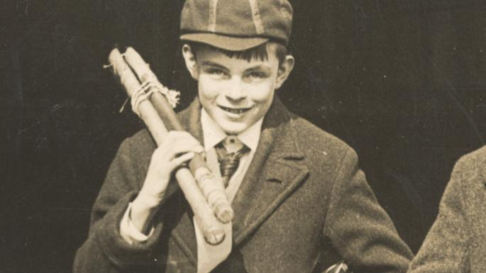

Alan Mathison Turing OBE FRS (23 June 1912 – 7 June 1954) was an English computer scientist, mathematician, logician, cryptanalyst, philosopher, and theoretical biologist.
Alan Mathison Turing OBE FRS (23 June 1912 – 7 June 1954) was an English computer scientist, mathematician, logician, cryptanalyst, philosopher, and theoretical biologist. Alan Mathison Turing OBE FRS (23 June 1912 – 7 June 1954) was an English computer scientist, mathematician, logician, cryptanalyst, philosopher, and theoretical biologist.
Turing was highly influential in the development of theoretical computer science, providing a formalisation of the concepts of algorithm and computation with the Turing machine, which can be considered a model of a general purpose computer. Turing is widely considered to be the father of theoretical computer science and artificial intelligence.
During the Second World War, Turing worked for the Government Code and Cypher School (GC&CS) at Bletchley Park, Britain's codebreaking centre that produced Ultra intelligence. For a time he led Hut 8, the section which was responsible for German naval cryptanalysis. Here he devised a number of techniques for speeding the breaking of German ciphers, including improvements to the pre-war Polish bombe method, an electromechanical machine that could find settings for the Enigma machine. Turing played a pivotal role in cracking intercepted coded messages that enabled the Allies to defeat the Nazis in many crucial engagements, including the Battle of the Atlantic, and in so doing helped win the war. Counterfactual history is difficult with respect to the effect Ultra intelligence had on the length of the war, but at the upper end it has been estimated that this work shortened the war in Europe by more than two years and saved over fourteen million lives.
After the war, Turing worked at the National Physical Laboratory, where he designed the ACE, among the first designs for a stored-program computer. In 1948 Turing joined Max Newman's Computing Machine Laboratory at the Victoria University of Manchester, where he helped develop the Manchester computers and became interested in mathematical biology. He wrote a paper on the chemical basis of morphogenesis, and predicted oscillating chemical reactions such as the Belousov–Zhabotinsky reaction, first observed in the 1960s.
Turing was prosecuted in 1952 for homosexual acts, when by the Labouchere Amendment, "gross indecency" was criminal in the UK. He accepted chemical castration treatment, with DES, as an alternative to prison. Turing died in 1954, 16 days before his 42nd birthday, from cyanide poisoning. An inquest determined his death as suicide, but it has been noted that the known evidence is also consistent with accidental poisoning.[15] In 2009, following an Internet campaign, British Prime Minister Gordon Brown made an official public apology on behalf of the British government for "the appalling way he was treated." Queen Elizabeth II granted him a posthumous pardon in 2013.The Alan Turing law is now an informal term for a 2017 law in the United Kingdom that retroactively pardoned men cautioned or convicted under historical legislation that outlawed homosexual acts